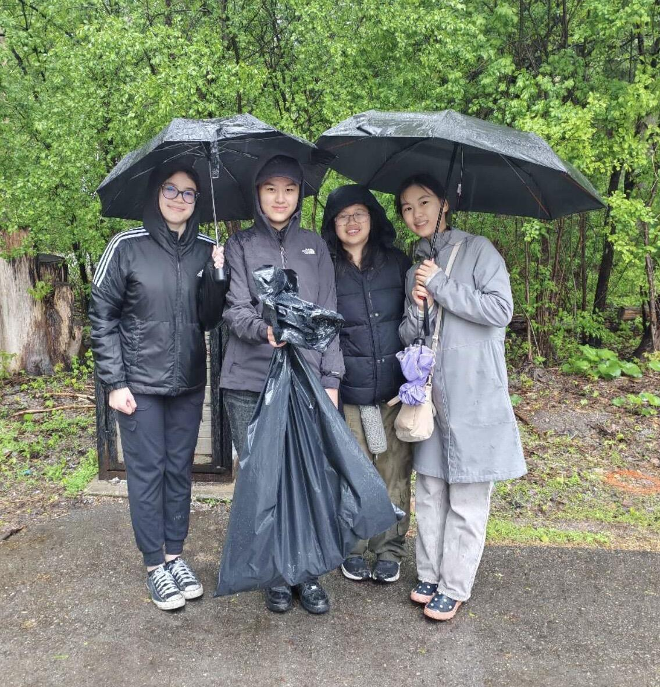
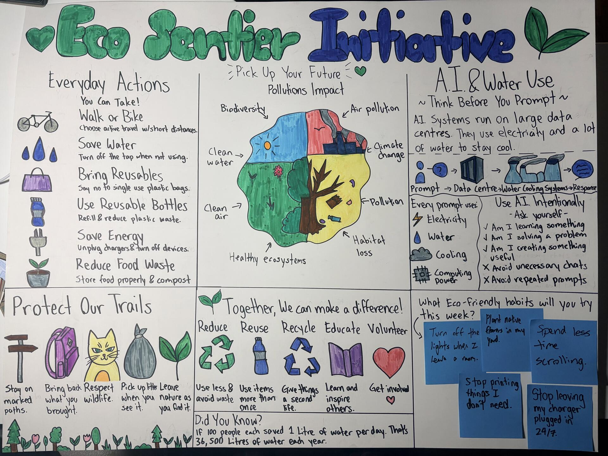
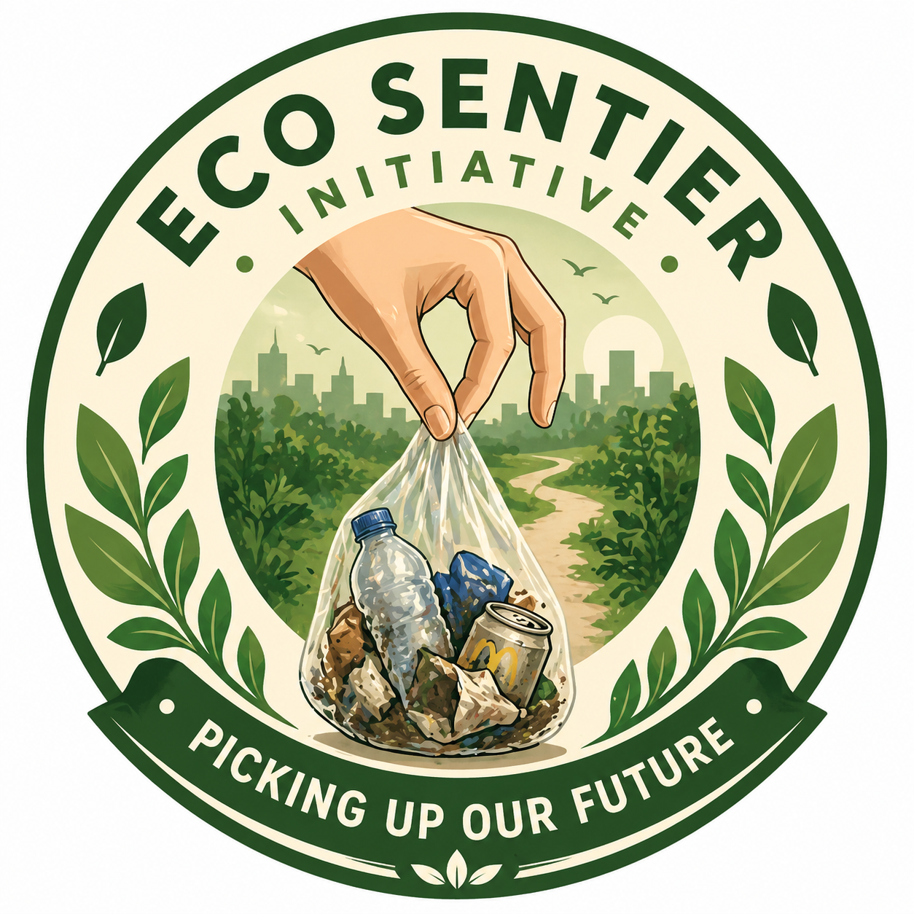
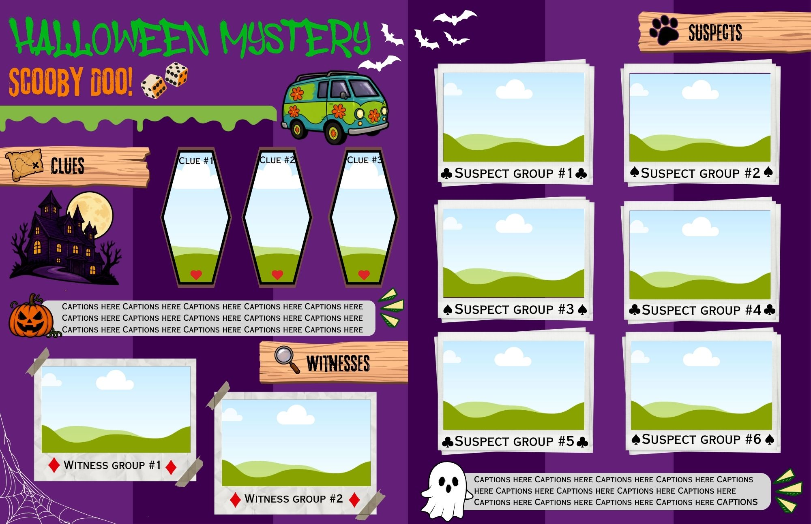
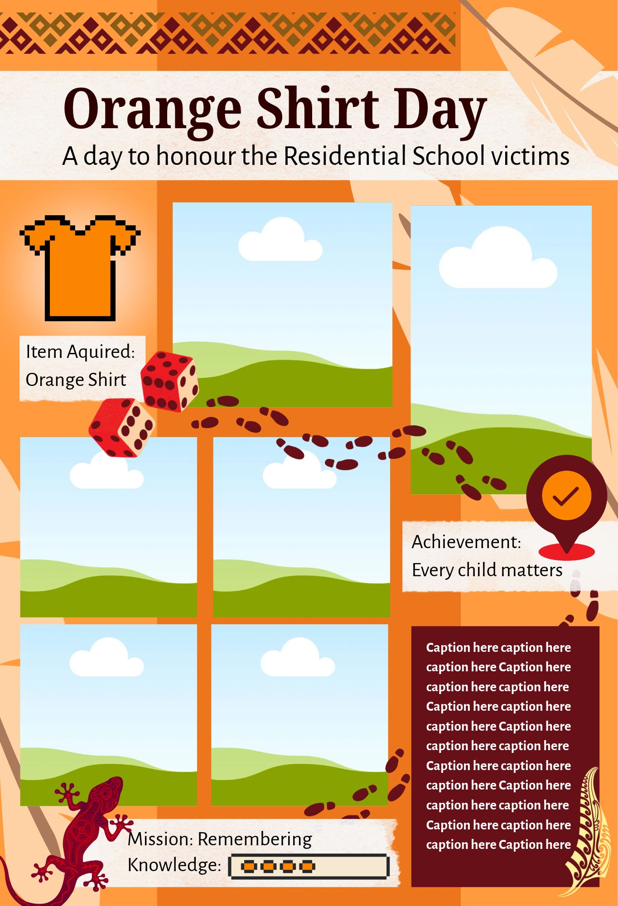
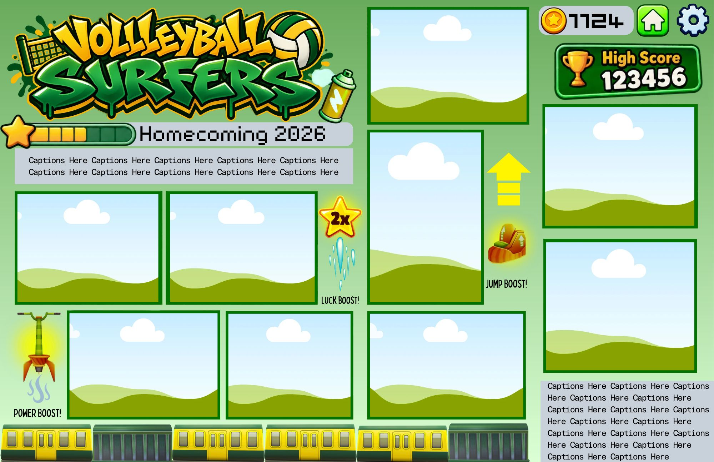

Projects.
A selection of independent work spanning financial research, investment analysis, and community initiatives.
01 / COMMUNITY INITIATIVE
Eco Sentier Initiative



↗Our Mission.
We are a student-led environmental initiative focused on cleaning local trails and advocating for a more eco-friendly lifestyle. We try to reach this goal by hosting cleanup events and setting up advocacy sessions where we speak to local hikers about different ways to live greener.
The Story.
I started this initiative because I noticed a lot of litter in my local forests, and I saw a need to clean up those trails and contribute to a cleaner city. To address that need, I founded an environmental initiative focused on organizing trail cleanup events with volunteers and promoting environmental awareness to community members. To make the initiative possible, I contacted my town government, which offered garbage bags and gloves. After that, I reached out to local businesses, one of which offered us magnets for distribution. For each event, I would find volunteers, create advertisement material, and promote the cause on social media. The first challenge I faced came during my first cleanup event, when it began raining just before we were supposed to start. As a result, far fewer volunteers showed up compared to those who had expressed interest through the sign-up form beforehand. I decided to continue because I did not want those who came to feel their efforts were wasted. In the end, the event still went well.
The Impact.
Through all of our cleanups and outreach so far, we have removed over 50 pounds of litter and engaged with more than 50 people, in addition to the social media outreach. Throughout the events, two moments in particular stood out to me. The first was amidst the cleanup when two hikers approached us and thanked us for our efforts. The second was during a promotional session. While I was talking to a family with a poster outlining everyday ways to be more environmentally conscious, one child told me that a lot of the information I shared was new to him. Before leaving, he left a sticky note on the poster saying he would unplug chargers to save electricity moving forward.
02 / FINANCIAL RESEARCH
Magna International Stock Pitch
Investment Presentation.
The Motivation.
I participated in the Target Alpha 2025 Stock Pitch Competition because I had been interested in business for a while and had taken many business-related courses at that time. So, I wanted to test myself on how well I could implement my classroom knowledge on those subjects in a real-world situation. This competition was the perfect chance for me to test myself.
The Competition.
I selected Magna International and examined its financial position, valuation, competitive landscape, and long-term growth prospects. My research incorporated discounted cash flow modelling and comparable-company analysis, alongside an examination of the automotive industry's transition toward electric vehicles.
I independently developed and presented my investment thesis, and responded to questions about the company's outlook and valuation in an organized manner to the panel of judges.
The Result.
My independent Magna International stock pitch earned second place nationally among approximately 88 teams. More than the result, I’m proud of how much I learned when it comes to applying theoretical financial knowledge in a real circumstance, conducting financial research, developing an investment thesis, and communicating my analysis. Furthermore, this experience made me more interested in studying finance and economics, as I enjoyed researching a problem, working through evidence, and coming to my own conclusions.
EDITORIAL DESIGN · 2026–PRESENT
Yearbook & Editorial Design
A collection of editorial layouts and visual explorations created for school publications, combining photography, typography, colour, and visual storytelling.
Selected Yearbook Designs
Event coverage and editorial layouts



Prom Editorial Design
A themed collection of promotional page concepts


Colour Theory & Exploration
Visual research, colour studies, and moodboards